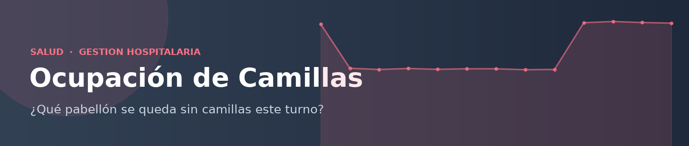

Saltar al contenido

De datos de ocupación a una decisión accionable. Autor:
pablomzzz
.
Filtros
Mes desde
Mes hasta
Hospital
Todos
Servicio
Todos
Turno
Todos
Limpiar filtros
Resumen
Pabellones críticos
Temporada
Presión por turno
Ocupación por hospital
Top 10 pabellones críticos (pacientes en espera acumulados)
Ocupación: invierno (may-ago) vs resto del año
Recomendaciones